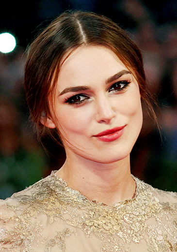
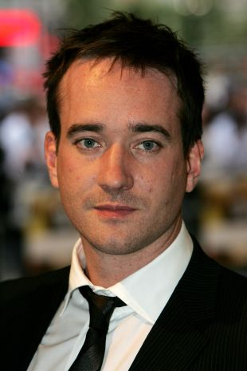
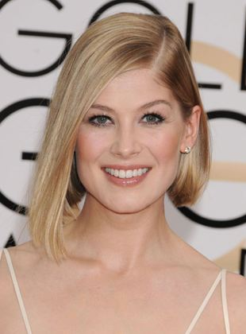
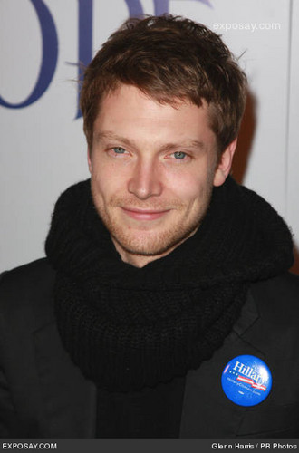

Nome: Keira Christina Knightley
Personagem: Elizabeth Bennet
Nascimento: 26 de março de 1985 (idade 37 anos)
Nacionalidade: Britânica
Keira Christina Knightley O.B.E. é uma atriz e modelo britânica. Por seu extenso trabalho nas indústrias cinematográficas britânica e americana, ganhou um prêmio Empire e várias indicações para a Academia Britânica, aos Globos de Ouro e ao Oscar.

Nome: David Matthew Macfadyen
Personagem: Sr. Darcy
Nascimento: 17 de outubro de 1974 (idade 47 anos)
Nacionalidade: Britânico
David Matthew Macfadyen é um ator de cinema e teatro britânico. É mais conhecido pelos seus papéis de agente do MI-5 Tom Quinn em Spooks, série dramática exibida pela BBC, como Fitzwilliam Darcy no filme Orgulho e Preconceito e Daniel na comédia Death at a Funeral

Nome: Rosamund Mary Elizabeth Pike
Personagem: Jane Bennet
Nascimento: 27 de janeiro de 1979 (idade 43 anos)
Nacionalidade: Britânica
É uma atriz britânica. Seus elogios incluem um Globo de Ouro e um Primetime Emmy Awards, com indicações ao Oscar e ao British Academy Film Awards. É conhecida como a bond girl Miranda Frost em Die Another Day (2002), Jane Bennet em Pride & Prejudice (2005) e Amy Dunne em Gone Girl (2014)

Nome: Simon Woods
Personagem: Charles Bingley
Nascimento: 7 de janeiro de 1980 (idade 42 anos)
Nacionalidade: Britânico
Ator mais conhecido por seu papel como Octavian na segunda temporada da série de televisão britânica e americana Rome e em 2005 Pride & Prejudice como Charles Bingley. Ele também estrelou como o Dr. Harrison na série de drama de fantasias da BBC1, Cranford, cuja chegada na vila "define o coração feminino correndo".
Voltar ao topo da pagina